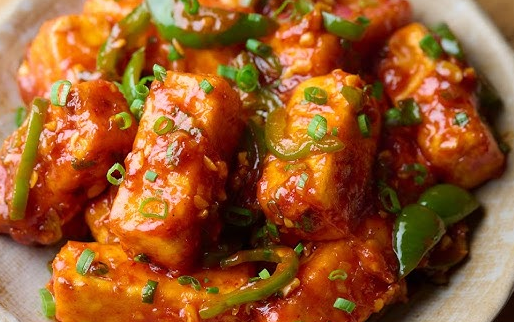

Home Page
Paneer Crispy

Delicious restaurant-style Paneer Crispy
Ingredients
Red Chilli Paste
- Kashmiri Red Chilli - 20-25 (deseeded and soaked)
- Water
- Vinegar
Paneer Chunks
Sauce
- Oil
- Garlic
- Chillies
- Ginger
- Capsicum
- Onion
- Pepper
- Soy Sauce
- Corn flour
Steps
Red Chilli Paste Preparation
- Soak the Kashmiri chilli in hot water for 2 hours, grind the chillies into fine paste
- Add the paste to an oiled heated pan, stir well, and cook over medium-high flame until crumbly and oil releases
- Add vinegar, stir well, store for later usage
Fried Paneer Chunks
- Coat the paneer Chunks with corn flour and fry them in oil
- Fry them until slightly golden brown
Sauce
- Heat the pan, add oil and then over high flame saute Garlic, Ginger, Chillies
- Add Capsicum, Onion and saute over medium flame
- Add spices pince of salt, pepper, sugar some soy Sauce, vinegar and stir well
- Thicken the sauce with corn flour slurry, heat for few minutes
Paneer Crispy
- Add fried Paneer Chunks to the sauce
- Make sure sauce is coated evenly to all chunks and flash fry for a minute
- Add some garnish and serve hot